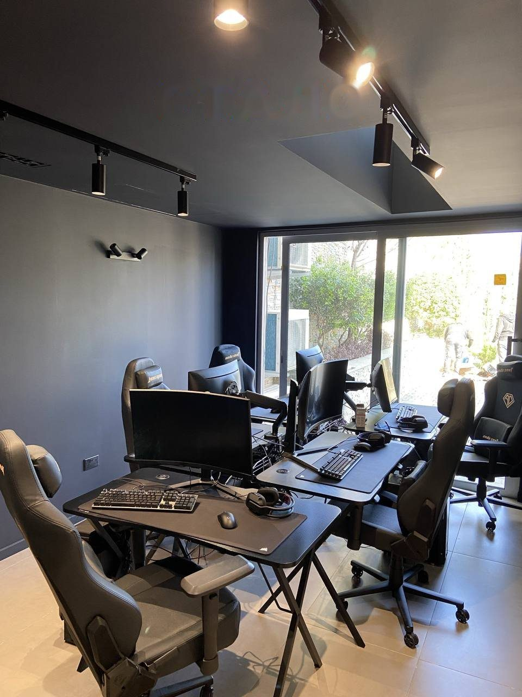

Игровая комната
Две игровые комнаты для командной игры

 ↔ДоПосле
↔ДоПосле
Задача
Две игровые комнаты для игры «команда на команду».
Что было непросто
- При сборке каркаса и сверлении потолка пробили канализационную трубу: в потолке первого этажа трёхэтажного дома её никто не ожидал.
- Высокая влажность: во время малярных работ шли постоянные дожди, осушитель не справлялся.
- Работа в нерабочее время: после 18:00 и в выходные, по условиям заказчика.
Что сделали
- Демонтаж и вывоз
- Система вентиляции
- Каркас стен и потолка
- Новая проводка: щиток, питание, освещение, интернет
- Шумоизоляция
- Малярные работы: шпаклёвка, покраска
- Люки доступа, замена плитки на полу, двери, плинтуса, светильники, установка мебели